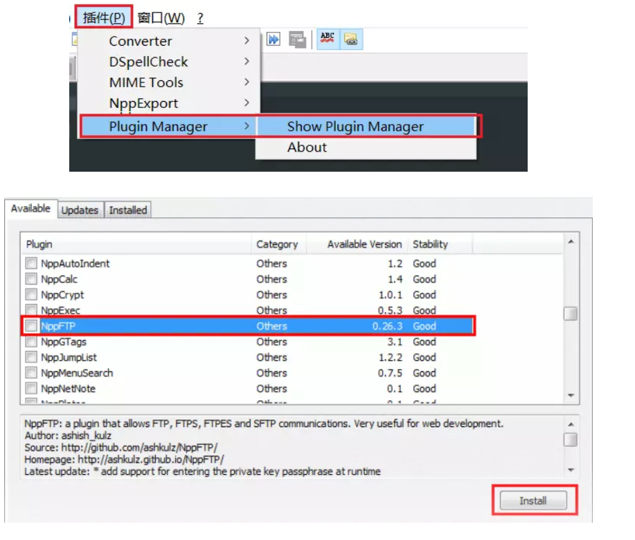
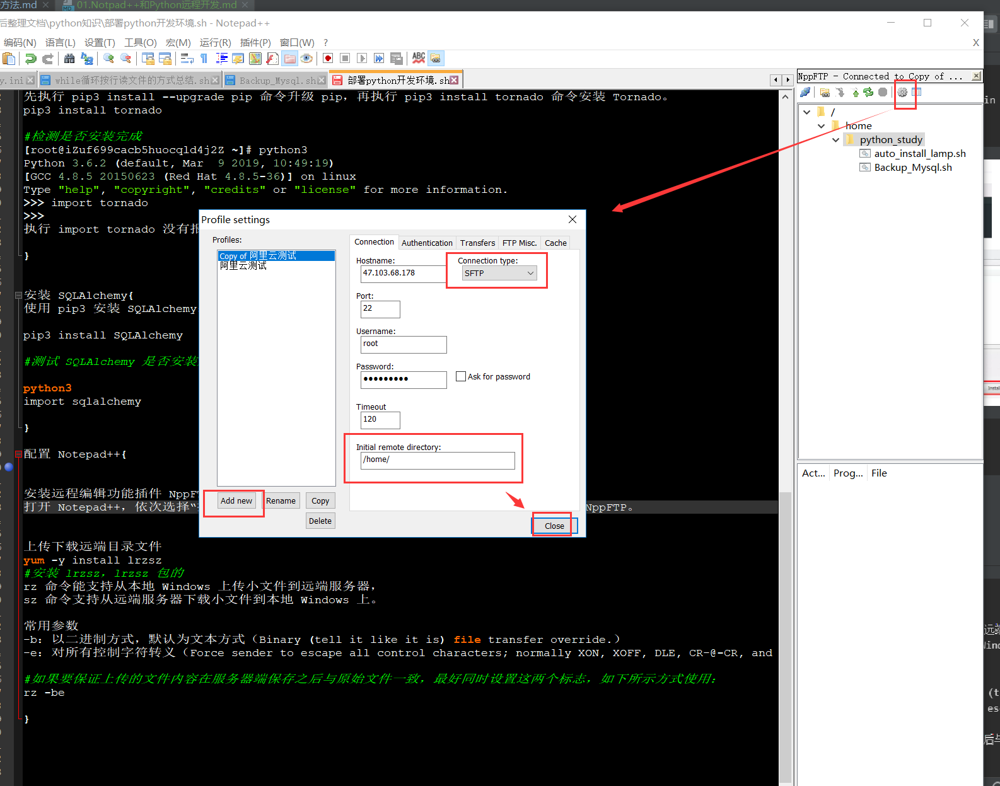

23.1. Notpad++和Python实现远程开发¶
23.1.1. 安装 Python 3.6.2¶
CentOS 7.2 操作系统自带的 Python 版本为 2.7.5，
。即安装完 Python 3.6.2 后，系统上同时存在 Python 2.7.5 和 Python 3.6.2 两个版本。
#安装依赖包
yum -y groupinstall "Development tools"
yum -y install zlib-devel bzip2-devel openssl-devel ncurses-devel sqlite-devel readline-devel tk-devel gdbm-devel db4-devel libpcap-devel xz-devel
#下载 Python 3.6.2
wget https://www.python.org/ftp/python/3.6.2/Python-3.6.2.tar.xz
#创建安装目录
mkdir /usr/local/python3
#安装 gcc
yum -y install gcc
#安装 Python 3.6.2
解压 Python 3.6.2 并安装在 /usr/local/python3 目录下。
tar -xvJf Python-3.6.2.tar.xz
cd Python-3.6.2
./configure --prefix=/usr/local/python3
make && make install
#创建软连
ln -s /usr/local/python3/bin/python3 /usr/bin/python3
ln -s /usr/local/python3/bin/pip3 /usr/bin/pip3
# 测试python3
[root@iZuf699cacb5huocqld4j2Z ~]# python3 --version
Python 3.6.2
[root@iZuf699cacb5huocqld4j2Z ~]# python3
Python 3.6.2 (default, Mar 9 2019, 10:49:19)
[GCC 4.8.5 20150623 (Red Hat 4.8.5-36)] on linux
Type "help", "copyright", "credits" or "license" for more information.
>>>
23.1.2. 安装 MySQL¶
yum install mysql-devel
wget http://dev.mysql.com/get/mysql-community-release-el7-5.noarch.rpm
rpm -ivh mysql-community-release-el7-5.noarch.rpm
yum -y install mysql-community-server
pip3 install mysqlclient
service mysqld restart
安装 MySQL 会比较久，大概 10 分钟左右，当看到 “Complete!” 后，表示安装成功。
测试 MySQL 安装是否成功：
systemctl status mysqld.service
23.1.3. 安装 Tornado¶
升级pip版本
pip3 install --upgrade pip
CentOS 下还无法直接使用 yum install tornado，但可以使用 pip 安装 Tornado。
先执行 pip3 install --upgrade pip 命令升级 pip，再执行 pip3 install tornado 命令安装 Tornado。
pip3 install tornado
#检测是否安装完成
[root@iZuf699cacb5huocqld4j2Z ~]# python3
Python 3.6.2 (default, Mar 9 2019, 10:49:19)
[GCC 4.8.5 20150623 (Red Hat 4.8.5-36)] on linux
Type "help", "copyright", "credits" or "license" for more information.
>>> import tornado
>>>
执行 import tornado 没有报错，表示 Tornado 已安装成功。
23.1.4. 安装 SQLAlchemy¶
使用 pip3 安装 SQLAlchemy：
pip3 install SQLAlchemy
#测试 SQLAlchemy 是否安装成功，服务器端依次输入如下命令。
python3
import sqlalchemy
23.1.5. 配置 Notepad++¶
安装远程编辑功能插件 NppFTP
打开 Notepad++，依次选择“插件” -> “Plugin Manager” -> “Show Plugin Manager”，找到NppFTP。
即可进行上传、下载文件文件的编辑。

配置远程远端服务器
打开 NppFTP 插件面板
 ## 上传下载远端目录文件
yum -y install lrzsz
#安装 lrzsz，lrzsz 包的
rz 命令能支持从本地 Windows 上传小文件到远端服务器，
sz 命令支持从远端服务器下载小文件到本地 Windows 上。
常用参数
-b：以二进制方式，默认为文本方式（Binary (tell it like it is) file transfer override.）
-e：对所有控制字符转义（Force sender to escape all control characters; normally XON, XOFF, DLE, CR-@-CR, and Ctrl-X are escaped.）
#如果要保证上传的文件内容在服务器端保存之后与原始文件一致，最好同时设置这两个标志，如下所示方式使用：
rz -be